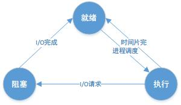

并发
进程
进程是一个具有独立功能的程序关于某个数据集合的一次运行活动。它可以申请和拥有系统资源，是一个动态的概念，是一个活动的实体。它不只是程序的代码，还包括当前的活动，通过程序计数器的值和处理寄存器的内容来表示。
进程的概念主要有两点：
进程是一个实体，每一个进程都有它自己的地址空间，一般情况下，包括文本区域（text region）、数据区域（data region）和堆栈（stack region）。文本区域存储处理器执行的代码；数据区域存储变量和进程执行期间使用的动态分配的内存；堆栈区域存储着活动过程调用的指令和本地变量。进程是一个“执行中的程序”，程序是一个没有生命的实体，只有处理器赋予程序生命时，它才能成为一个活动的实体，我们称其为进程。
进程的基本状态
阻塞态：等待某个事件的完成；就绪态：等待系统分配处理器以便运行；执行态：占有处理器正在运行。

执行态 -> 阻塞态：往往是由于等待外设，等待主存等资源分配或等待人工干预而引起的。
阻塞态 -> 就绪态：则是等待的条件已满足，只需分配到处理器后就能运行。
执行态 -> 就绪态：不是由于自身原因，而是由外界原因使运行状态的进程让出处理器，这时候就变成就绪态。例如时间片用完，或有更高优先级的进程来抢占处理器等。
就绪态 -> 执行态：系统按某种策略选中就绪队列中的一个进程占用处理器，此时就变成了运行态
进程调度
调度种类
高级、中级和低级调度作业从提交开始直到完成，往往要经历下述三级调度：
- 高级调度：又称为作业调度，它决定把后备作业调入内存运行；
- 中级调度：又称为在虚拟存储器中引入，在内、外存对换区进行进程对换。
- 低级调度：又称为进程调度，它决定把就绪队列的某进程获得CPU；
非抢占式调度与抢占式调度
非抢占式：分派程序一旦把处理机分配给某进程后便让它一直运行下去，直到进程完成或发生进程调度进程调度某事件而阻塞时，才把处理机分配给另一个进程。抢占式：操作系统将正在运行的进程强行暂停，由调度程序将CPU分配给其他就绪进程的调度方式。
调度策略的设计
响应时间：从用户输入到产生反应的时间周转时间：从任务开始到任务结束的时间平均周转时间：周转总时间除以作业个数
CPU任务可以分为交互式任务和批处理任务，调度最终的目标是合理的使用CPU，使得交互式任务的响应时间尽可能短，用户不至于感到延迟，同时使得批处理任务的周转时间尽可能短，减少用户等待的时间。
调度算法
- FCFS：调度的顺序就是任务到达就绪队列的顺序。对短作业不公平。
公平、简单(FIFO队列)、非抢占、不适合交互式。未考虑任务特性，平均等待时间可以缩短
- SJF：最短的作业(CPU区间长度最小)最先调度。
可以证明，SJF可以保证最小的平均等待时间。
- SRJF：SJF的可抢占版本，比SJF更有优势。
SJF(SRJF): 如何知道下一CPU区间大小？根据历史进行预测: 指数平均法。
- HRN：最高响应比优先法，是FCFS和SJF的综合平衡，响应比R定义如下：
R =(W+T)/T。 - 优先权调度：每个任务关联一个优先权，调度优先权最高的任务。
注意：优先权太低的任务一直就绪，得不到运行，出现“饥饿”现象。
FCFS是RR的特例，SJF是优先权调度的特例。这些调度算法都不适合于交互式系统。
- Round-Robin(RR)：设置一个时间片，按时间片来轮转调度
优点: 定时有响应，等待时间较短；缺点: 上下文切换次数较多；
时间片太大，响应时间太长；吞吐量变小，周转时间变长；当时间片过长时，退化为FCFS。
多级队列调度
按照一定的规则建立多个进程队列
- 不同的队列有固定的优先级（高优先级有抢占权）
- 不同的队列可以给不同的时间片和采用不同的调度方法
存在问题1：没法区分I/O bound和CPU bound；
存在问题2：也存在一定程度的“饥饿”现象；
- 多级反馈队列：在多级队列的基础上，任务可以在队列之间移动，更细致的区分任务。可以根据“享用”CPU时间多少来移动队列，阻止“饥饿”。
最通用的调度算法，多数OS都使用该方法或其变形，如UNIX、Windows等。
进程同步
临界资源与临界区
在操作系统中，进程是占有资源的最小单位（线程可以访问其所在进程内的所有资源，但线程本身并不占有资源或仅仅占有一点必须资源）。但对于某些资源来说，其在同一时间只能被一个进程所占用。这些一次只能被一个进程所占用的资源就是所谓的临界资源。典型的临界资源比如物理上的打印机，或是存在硬盘或内存中被多个进程所共享的一些变量和数据等(如果这类资源不被看成临界资源加以保护，那么很有可能造成丢数据的问题)。
对于临界资源的访问，必须是互斥进行。也就是当临界资源被占用时，另一个申请临界资源的进程会被阻塞，直到其所申请的临界资源被释放。而进程内访问临界资源的代码被成为临界区。
对于临界区的访问过程分为四个部分：
- 进入区:查看临界区是否可访问，如果可以访问，则转到步骤二，否则进程会被阻塞
- 临界区:在临界区做操作
- 退出区:清除临界区被占用的标志
- 剩余区：进程与临界区不相关部分的代码
解决临界区问题可能的方法：
- 一般软件方法
- 关中断方法
- 硬件原子指令方法
- 信号量方法
信号量
信号量是一个确定的二元组（s，q），其中s是一个具有非负初值的整形变量，q是一个初始状态为空的队列，整形变量s表示系统中某类资源的数目：
- 当其值
>= 0时，表示系统中当前可用资源的数目 - 当其值
< 0时，其绝对值表示系统中因请求该类资源而被阻塞的进程数目
除信号量的初值外，信号量的值仅能由P操作和V操作更改，操作系统利用它的状态对进程和资源进行管理
P操作
P操作记为P(s)，其中s为一信号量，它执行时主要完成以下动作：
s.value = s.value - 1； /*可理解为占用1个资源，若原来就没有则记帐“欠”1个*/
若s.value ≥ 0，则进程继续执行，否则（即s.value < 0），则进程被阻塞，并将该进程插入到信号量s的等待队列s.queue中
实际上，P操作可以理解为分配资源的计数器，或是使进程处于等待状态的控制指令
V操作
V操作记为V(s)，其中s为一信号量，它执行时，主要完成以下动作：
s.value = s.value + 1；/*可理解为归还1个资源，若原来就没有则意义是用此资源还1个欠帐*/
若s.value > 0，则进程继续执行，否则（即s.value ≤ 0），则从信号量s的等待队s.queue中移出第一个进程，使其变为就绪状态，然后返回原进程继续执行
实际上，V操作可以理解为归还资源的计数器，或是唤醒进程使其处于就绪状态的控制指令
锁
- 互斥锁：同一时间只能有一个线程访问加锁的数据。
- 自旋锁：互斥锁的一种实现，如果自旋锁已经被别的执行单元保持，调用者就一直 循环等待 是否该自旋锁的保持者已经释放了锁。
- 读写锁：一种特殊的自旋锁，它把对共享资源的访问者划分成读者和写者，读者只对共享资源进行读访问，写者则需要对共享资源进行写操作。写者是排他性的，一个读写锁同时只能有一个写者或多个读者（与CPU数相关），但不能同时既有读者又有写者。
- 阻塞锁：与自旋锁不同，改变了线程的运行状态。让线程进入阻塞状态进行等待，当获得相应的信号（唤醒，时间） 时，才可以进入线程的准备就绪状态，准备就绪状态的所有线程，通过竞争，进入运行状态。
在Java中synchronized,ReentrantLock,Object.wait() / notify()都属于阻塞锁。
- 可重入锁：也叫做递归锁，指的是同一线程上该锁是可重入的，对于不同线程则相当于普通的互斥锁。
- 公平锁：加锁前检查是否有排队等待的线程，优先排队等待的线程，先来先得。
- 非公平锁：加锁时不考虑排队等待问题，直接尝试获取锁，获取不到自动到队尾等待。
ReentrantLock中的lock()默认就是非公平锁。 - 悲观锁：假定会发生并发冲突，屏蔽一切可能违反数据完整性的操作。加锁的时间可能会很长，也就是说悲观锁的并发访问性不好。
- 乐观锁：假设不会发生并发冲突，只在提交操作时检查是否违反数据完整性。乐观锁不能解决脏读的问题，可以通过添加时间戳和版本来来解决。
CAS
比较并交换(compare and swap, CAS)，是原子操作的一种，可用于在多线程编程中实现不被打断的数据交换操作。该操作通过将内存中的值与指定数据进行比较，当数值一样时将内存中的数据替换为新的值。
在使用上，通常会记录下某块内存中的旧值，通过对旧值进行一系列的操作后得到新值，然后通过CAS操作将新值与旧值进行交换。如果这块内存的值在这期间内没被修改过，则旧值会与内存中的数据相同，这时CAS操作将会成功执行使内存中的数据变为新值。如果内存中的值在这期间内被修改过，则一般来说旧值会与内存中的数据不同，这时CAS操作将会失败，新值将不会被写入内存。
死锁
死锁是指多个进程因循环等待资源而造成无法执行的现象。死锁会造成进程无法执行，同时会造成系统资源的极大浪费(资源无法释放)。
死锁产生的四个必要条件
互斥使用：指进程对所分配到的资源进行排它性使用，即在一段时间内某资源只由一个进程占用。如果此时还有其它进程请求资源，则请求者只能等待，直至占有资源的进程用毕释放。不可抢占：指进程已获得的资源，在未使用完之前，不能被剥夺，只能在使用完时由自己释放。请求和保持：指进程已经保持至少一个资源，但又提出了新的资源请求，而该资源已被其它进程占有，此时请求进程阻塞，但又对自己已获得的其它资源保持不放。循环等待：指在发生死锁时，必然存在一个进程——资源的环形链，即进程集合{P0，P1，P2，···，Pn}中的P0正在等待一个P1占用的资源；P1正在等待P2占用的资源，……，Pn正在等待已被P0占用的资源。
死锁避免
银行家算法：判断此次请求是否造成死锁若会造成死锁，则拒绝该请求。
进程间通信
本地进程间通信的方式有很多，可以总结为下面四类：
- 消息传递（管道、FIFO、消息队列）
- 同步（互斥量、条件变量、读写锁、文件和写记录锁、信号量）
- 共享内存（匿名的和具名的）
- 远程过程调用（Solaris门和Sun RPC）
子进程
在 Unix 和类 Unix 系统中，子进程通常为系统调用 fork 的产物。调用 fork 后的父子进程会运行在不同的内存空间中，当 fork 发生时两者的内存空间有着完全相同的内容，对内存的写入和修改、文件的映射都是独立的，两个进程不会相互影响。除此之外，子进程几乎是父进程的完整副本。
既然父进程和子进程拥有完全相同的内存空间并且两者对内存的写入都不会相互影响，那么是否意味着子进程在 fork 时需要对父进程的内存进行全量的拷贝呢？
在一些早期的 *nix 系统上，系统调用 fork 确实会立刻对父进程的内存空间进行复制，但是在今天的多数系统中， fork 并不会立刻触发这一过程，而是在内存被修改时，才会进行数据复制（Copy-On-Write）。
当 fork 函数调用时，父进程和子进程会被 Kernel 分配到不同的虚拟内存空间中，所以在两个进程看来它们访问的是不同的内存：
- 在真正访问虚拟内存空间时，Kernel 会将虚拟内存映射到物理内存上，所以父子进程共享了物理上的内存空间；
- 当父进程或者子进程对共享的内存进行修改时，共享的内存才会以页为单位进行拷贝，父进程会保留原有的物理空间，而子进程会使用拷贝后的新物理空间；
线程
线程是 操作系统能够进行运算调度的最小单位。它被包含在进程之中，是进程中的实际运作单位。一条线程指的是进程中一个单一顺序的控制流，一个进程中可以并发多个线程，每条线程并行执行不同的任务。在Unix System V及SunOS中也被称为轻量进程(lightweight processes)，但轻量进程更多指内核线程(kernel thread)，而把用户线程(user thread)称为线程。
线程是独立调度和分派的基本单位。线程可以操作系统内核调度的内核线程，如Win32线程；由用户进程自行调度的用户线程，如Linux平台的POSIX Thread；或者由内核与用户进程，如Windows 7的线程，进行混合调度。
同一进程中的多条线程将共享该进程中的全部系统资源，如虚拟地址空间，文件描述符和信号处理等等。但同一进程中的多个线程有各自的调用栈，自己的寄存器环境，自己的线程本地存储。
线程的属性
轻型实体：线程中的实体基本上不拥有系统资源，只是有一点必不可少的、能保证独立运行的资源。线程的实体包括程序、数据和TCB。线程是动态概念，它的动态特性由线程控制块TCB（Thread Control Block）描述。TCB包括以下信息：
- 线程状态。
- 当线程不运行时，被保存的现场资源。
- 一组执行堆栈。
- 存放每个线程的局部变量主存区。
- 访问同一个进程中的主存和其它资源。
用于指示被执行指令序列的程序计数器、保留局部变量、少数状态参数和返回地址等的一组寄存器和堆栈。
独立调度和分派的基本单位：在多线程OS中，线程是能独立运行的基本单位，因而也是独立调度和分派的基本单位。由于线程很“轻”，故线程的切换非常迅速且开销小（在同一进程中的）。
可并发执行：在一个进程中的多个线程之间，可以并发执行，甚至允许在一个进程中所有线程都能并发执行；同样，不同进程中的线程也能并发执行，充分利用和发挥了处理机与外围设备并行工作的能力。
共享进程资源：在同一进程中的各个线程，都可以共享该进程所拥有的资源，这首先表现在：所有线程都具有相同的地址空间（进程的地址空间），这意味着，线程可以访问该地址空间的每一个虚地址；此外，还可以访问进程所拥有的已打开文件、定时器、信号量机构等。由于同一个进程内的线程共享内存和文件，所以线程之间互相通信不必调用内核。
线程共享的环境包括：进程代码段、进程的公有数据(利用这些共享的数据，线程很容易的实现相互之间的通讯)、进程打开的文件描述符、信号的处理器、进程的当前目录和进程用户ID与进程组ID。
线程是程序执行的一条路径，在多线程的OS中，线程是调度和分配的基本单位，而进程是拥有资源的基本单位。